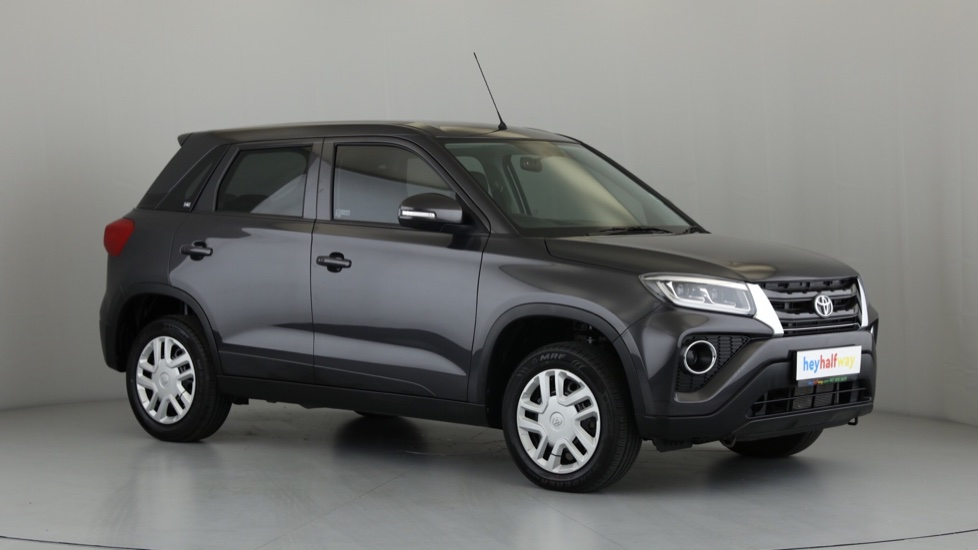

Toyota Urban Cruiser (2021)

The Toyota Urban Cruiser is an automobile nameplate used by the Japanese automobile manufacturer Toyota since 2008 for several subcompact crossover SUV models
Manufacturer: Toyota- Production: September 2008 - present
- Assembly: Japan
- Designer: Yaguchi
- Colors Available: Grey, Black, White, Blue
- Price: R 65,000 (Payment over 24 months available)